import pandas as pd
import seaborn as sns; sns.set_theme()
import matplotlib.pyplot as plt0. Getting the Data
0.1 Source
This notebook will make use of classifications made by Chen, Bo Han et. al. (2022) and parameters calculated by Hashimoto, Tetsuya et. al. (2022).
from pathlib import Path
chen2022 = pd.read_csv(Path('..', 'data', 'raw', 'external', 'chen2022_classification.csv'))
hashimoto2022 = pd.read_csv(Path('..', 'data', 'raw', 'external', 'Hashimoto2022_chimefrbcat1.csv'))
data = pd.merge(chen2022[['tns_name', 'group']], hashimoto2022, on='tns_name')
data| tns_name | group | previous_name | repeater_name | ra | ra_err | ra_notes | dec | dec_err | dec_notes | ... | weight_fluence_error_m | weight | weight_error_p | weight_error_m | weighted_logrhoA | weighted_logrhoA_error_p | weighted_logrhoA_error_m | weighted_logrhoB | weighted_logrhoB_error_p | weighted_logrhoB_error_m | |
|---|---|---|---|---|---|---|---|---|---|---|---|---|---|---|---|---|---|---|---|---|---|
| 0 | FRB20180725A | repeater_cluster_1 | 180725.J0613+67 | -9999 | 93.42 | 0.04 | -9999 | 67.10 | 0.20 | -9999 | ... | NaN | NaN | NaN | NaN | NaN | NaN | NaN | NaN | NaN | NaN |
| 1 | FRB20180727A | other_cluster_6 | 180727.J1311+26 | -9999 | 197.70 | 0.10 | -9999 | 26.40 | 0.30 | -9999 | ... | NaN | NaN | NaN | NaN | NaN | NaN | NaN | NaN | NaN | NaN |
| 2 | FRB20180729A | other_cluster_3 | 180729.J1316+55 | -9999 | 199.40 | 0.10 | -9999 | 55.58 | 0.08 | -9999 | ... | NaN | NaN | NaN | NaN | NaN | NaN | NaN | NaN | NaN | NaN |
| 3 | FRB20180729B | repeater_cluster_1 | 180729.J0558+56 | -9999 | 89.90 | 0.30 | -9999 | 56.50 | 0.20 | -9999 | ... | NaN | NaN | NaN | NaN | NaN | NaN | NaN | NaN | NaN | NaN |
| 4 | FRB20180730A | other_cluster_5 | 180730.J0353+87 | -9999 | 57.39 | 0.03 | -9999 | 87.20 | 0.20 | -9999 | ... | NaN | NaN | NaN | NaN | NaN | NaN | NaN | NaN | NaN | NaN |
| ... | ... | ... | ... | ... | ... | ... | ... | ... | ... | ... | ... | ... | ... | ... | ... | ... | ... | ... | ... | ... | ... |
| 784 | FRB20190701A | other_cluster_1 | -9999 | -9999 | 277.50 | 0.20 | -9999 | 59.00 | 0.20 | -9999 | ... | NaN | NaN | NaN | NaN | NaN | NaN | NaN | NaN | NaN | NaN |
| 785 | FRB20190701B | other_cluster_5 | -9999 | -9999 | 302.90 | 0.20 | -9999 | 80.20 | 0.20 | -9999 | ... | NaN | NaN | NaN | NaN | NaN | NaN | NaN | NaN | NaN | NaN |
| 786 | FRB20190701C | repeater_cluster_3 | -9999 | -9999 | 96.40 | 0.20 | -9999 | 81.60 | 0.30 | -9999 | ... | NaN | NaN | NaN | NaN | NaN | NaN | NaN | NaN | NaN | NaN |
| 787 | FRB20190701D | other_cluster_3 | -9999 | -9999 | 112.10 | 0.20 | -9999 | 66.70 | 0.20 | -9999 | ... | 0.000649 | 1.361506 | 0.574701 | 0.206776 | 0.813142 | 0.485293 | 0.109293 | 0.894742 | 0.25519 | 0.19035 |
| 788 | FRB20190701E | other_cluster_2 | -9999 | -9999 | 138.60 | 0.20 | -9999 | 61.71 | 0.04 | -9999 | ... | NaN | NaN | NaN | NaN | NaN | NaN | NaN | NaN | NaN | NaN |
789 rows × 108 columns
1. Preprocessing
1.1 Calculating Parameters
1.1.1 Intrinsic Width
The observed width is easily affected by dispersion, therefore we need to introduce the intrinsic width to study the pulse width more accurately. The intrinsic width is estimated by equation: \[ t_i = \sqrt{t^2_\text{obs} − t^2_\text{DM} − t^2_s} \tag{1}\] In the above formula, \(t_i(t_\text{obs})\) is the intrinsic width (observed width), with \(t_s\) being the sampling time that depends on the instrument, and \(t_\text{DM}\) is the dispersion smearing time-scale as calculated in the following: \[ t_\text{DM} = 8.3 \times 10^{−3} \text{DM}\frac{\Delta ν_\text{MHz}}{ν^3_\text{GHz}} ms, \tag{2}\] where DM is the dispersion measure, \(\Delta ν_\text{MHz}\) is the channel bandwidth in the unit of MHz, and \(ν_\text{GHz}\) is the central frequency in the unit of GHz. Therefore, the pulse width in the following text represents the intrinsic width.
1.2 Choosing Parameters
- intrinsic width (
width_fb)1 - radio luminosity
- fluence (
fluence) - flux (
flux) - log rest-frame intrinsic duration (
logsubw_int_rest) - radio energy in the logarithmic scale integrated over 400 MHz (
logE_rest_400) - highest frequency (
high_freq) - lowest frequenc (
low_freq) - peak frequency (
peak_freq)
data['diff_freq'] = data['high_freq'] - data['low_freq']identifier_params = [
'tns_name',
'group'
]
selected_params = [
'logsubw_int_rest',
'logE_rest_400',
'high_freq',
'low_freq',
'peak_freq',
'flux',
'fluence',
'width_fitb',
'diff_freq'
]
data = data[[*identifier_params, *selected_params]]
data| tns_name | group | logsubw_int_rest | logE_rest_400 | high_freq | low_freq | peak_freq | flux | fluence | width_fitb | diff_freq | |
|---|---|---|---|---|---|---|---|---|---|---|---|
| 0 | FRB20180725A | repeater_cluster_1 | -0.748199 | 40.208078 | 760.1 | 485.3 | 607.4 | 2.0 | 4.0 | 0.00030 | 274.8 |
| 1 | FRB20180727A | other_cluster_6 | -0.073706 | 39.791080 | 800.2 | 400.2 | 493.3 | 0.6 | 2.3 | 0.00140 | 400.0 |
| 2 | FRB20180729A | other_cluster_3 | -0.948762 | 38.880719 | 692.7 | 400.2 | 525.6 | 12.0 | 20.0 | 0.00010 | 292.5 |
| 3 | FRB20180729B | repeater_cluster_1 | -0.582195 | 38.561879 | 800.2 | 441.8 | 657.5 | 0.9 | 1.2 | 0.00031 | 358.4 |
| 4 | FRB20180730A | other_cluster_5 | -0.592583 | 41.127444 | 759.2 | 400.2 | 483.5 | 5.0 | 30.0 | 0.00047 | 359.0 |
| ... | ... | ... | ... | ... | ... | ... | ... | ... | ... | ... | ... |
| 784 | FRB20190701A | other_cluster_1 | -0.423913 | 39.639959 | 800.2 | 400.2 | 800.2 | 1.3 | 1.7 | 0.00061 | 400.0 |
| 785 | FRB20190701B | other_cluster_5 | -0.463004 | 39.870346 | 732.8 | 400.2 | 471.5 | 1.1 | 1.9 | 0.00060 | 332.6 |
| 786 | FRB20190701C | repeater_cluster_3 | -0.148206 | 40.362724 | 495.5 | 402.2 | 446.4 | 0.9 | 2.0 | 0.00140 | 93.3 |
| 787 | FRB20190701D | other_cluster_3 | -0.141426 | 40.835803 | 651.8 | 400.2 | 467.6 | 1.3 | 9.0 | 0.00140 | 251.6 |
| 788 | FRB20190701E | other_cluster_2 | -0.671894 | 39.964235 | 800.2 | 400.2 | 410.3 | 0.7 | 2.0 | 0.00040 | 400.0 |
789 rows × 11 columns
from itertools import combinations
from scipy.stats import mannwhitneyu
mix_match = pd.DataFrame([*combinations(data['group'].unique(), 2)], columns=['first', 'second'])
mix_match['mww'] = mannwhitneyu(data[data['group'] == mix_match['first']]['width_fitb'], data[data['group']==mix_match['second']]['width_fitb'])
mix_matchValueError: Can only compare identically-labeled Series objectsfor idx, (first, second) in enumerate(zip(mix_match['first'], mix_match['second'])):
result = mannwhitneyu(data[data['group'] == first]['width_fitb'], data[data['group'] == second]['width_fitb'])
# print(result.__dir__())
mix_match.loc[idx, ['mww_width']] = result.pvalue
# mix_match.loc[:,['first']].values[0]mix_match| first | second | mww_width | |
|---|---|---|---|
| 0 | repeater_cluster_1 | other_cluster_6 | 0.009313 |
| 1 | repeater_cluster_1 | other_cluster_3 | 0.000323 |
| 2 | repeater_cluster_1 | other_cluster_5 | 0.034013 |
| 3 | repeater_cluster_1 | other_cluster_2 | 0.021257 |
| 4 | repeater_cluster_1 | other_cluster_1 | 0.368829 |
| 5 | repeater_cluster_1 | repeater_cluster_3 | 0.201234 |
| 6 | repeater_cluster_1 | other_cluster_4 | 0.110173 |
| 7 | repeater_cluster_1 | repeater_cluster_2 | 0.014269 |
| 8 | other_cluster_6 | other_cluster_3 | 0.070644 |
| 9 | other_cluster_6 | other_cluster_5 | 0.649525 |
| 10 | other_cluster_6 | other_cluster_2 | 0.740351 |
| 11 | other_cluster_6 | other_cluster_1 | 0.702100 |
| 12 | other_cluster_6 | repeater_cluster_3 | 0.178768 |
| 13 | other_cluster_6 | other_cluster_4 | 0.973988 |
| 14 | other_cluster_6 | repeater_cluster_2 | 0.379427 |
| 15 | other_cluster_3 | other_cluster_5 | 0.382547 |
| 16 | other_cluster_3 | other_cluster_2 | 0.168447 |
| 17 | other_cluster_3 | other_cluster_1 | 0.201606 |
| 18 | other_cluster_3 | repeater_cluster_3 | 0.005728 |
| 19 | other_cluster_3 | other_cluster_4 | 0.175595 |
| 20 | other_cluster_3 | repeater_cluster_2 | 0.660534 |
| 21 | other_cluster_5 | other_cluster_2 | 0.722313 |
| 22 | other_cluster_5 | other_cluster_1 | 0.499936 |
| 23 | other_cluster_5 | repeater_cluster_3 | 0.161985 |
| 24 | other_cluster_5 | other_cluster_4 | 0.605066 |
| 25 | other_cluster_5 | repeater_cluster_2 | 0.716361 |
| 26 | other_cluster_2 | other_cluster_1 | 0.803334 |
| 27 | other_cluster_2 | repeater_cluster_3 | 0.164067 |
| 28 | other_cluster_2 | other_cluster_4 | 0.559644 |
| 29 | other_cluster_2 | repeater_cluster_2 | 0.517584 |
| 30 | other_cluster_1 | repeater_cluster_3 | 0.802093 |
| 31 | other_cluster_1 | other_cluster_4 | 0.971454 |
| 32 | other_cluster_1 | repeater_cluster_2 | 0.386282 |
| 33 | repeater_cluster_3 | other_cluster_4 | 0.401549 |
| 34 | repeater_cluster_3 | repeater_cluster_2 | 0.089872 |
| 35 | other_cluster_4 | repeater_cluster_2 | 0.452530 |
for param in selected_params:
sns.ecdfplot(data, x=param, hue='group')
plt.show()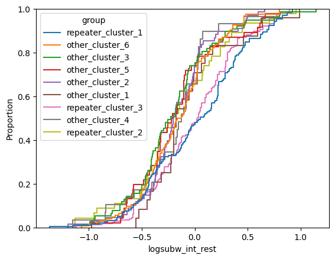
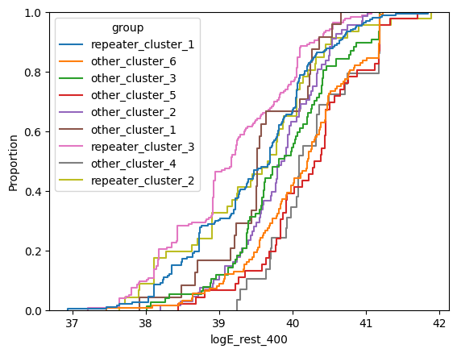
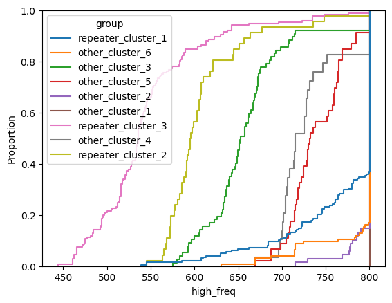
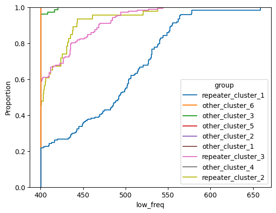
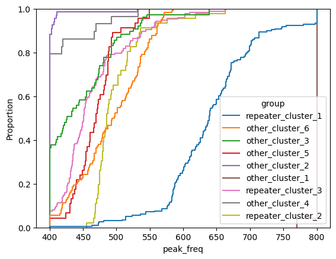
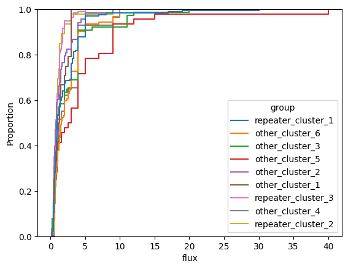
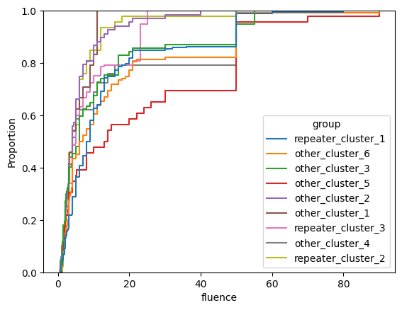
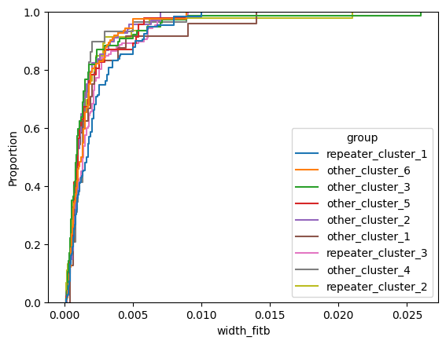
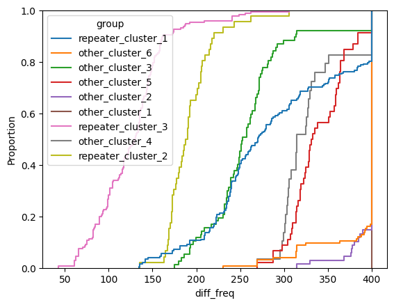
# Label randomly
import random
control = data.copy()
random.shuffle(control['group'])
data['classification'] = 'Chen et. al (2022)'
control['classification'] = 'random'
for param in selected_params:
g = sns.FacetGrid(pd.concat([data, control]), col='classification', hue='group')
g.map(sns.ecdfplot, param)
g.add_legend()
plt.show()C:\Users\LENOVO\.pyenv\pyenv-win\versions\3.8.10\lib\random.py:307: SettingWithCopyWarning:
A value is trying to be set on a copy of a slice from a DataFrame
See the caveats in the documentation: https://pandas.pydata.org/pandas-docs/stable/user_guide/indexing.html#returning-a-view-versus-a-copy
x[i], x[j] = x[j], x[i]
C:\Users\LENOVO\AppData\Local\Temp\ipykernel_12464\293886728.py:7: SettingWithCopyWarning:
A value is trying to be set on a copy of a slice from a DataFrame.
Try using .loc[row_indexer,col_indexer] = value instead
See the caveats in the documentation: https://pandas.pydata.org/pandas-docs/stable/user_guide/indexing.html#returning-a-view-versus-a-copy
data['classification'] = 'Chen et. al (2022)'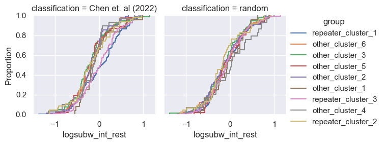
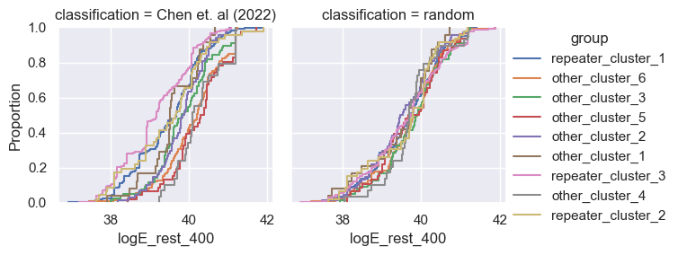
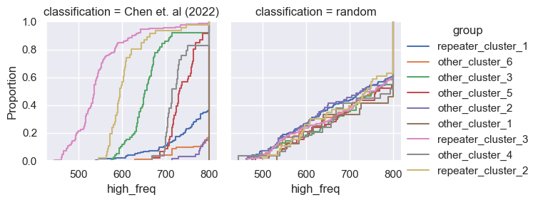
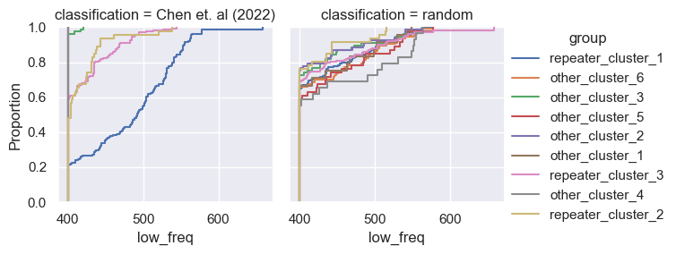
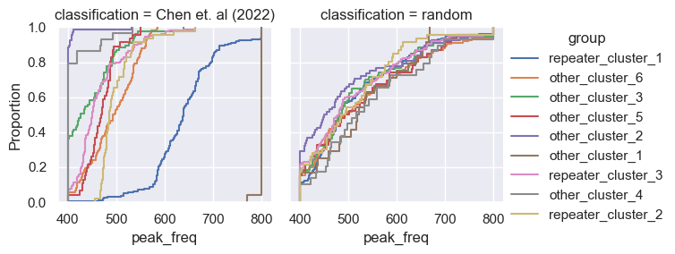
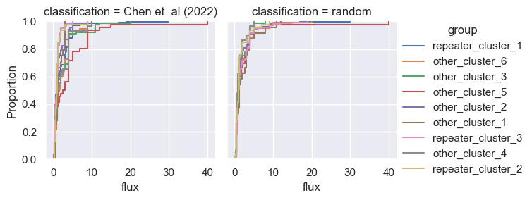
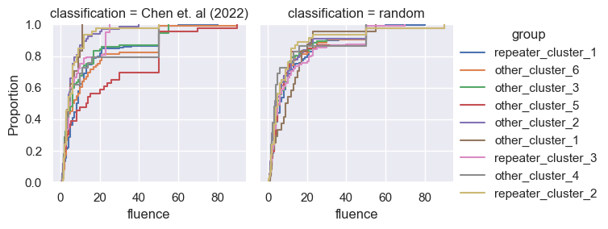
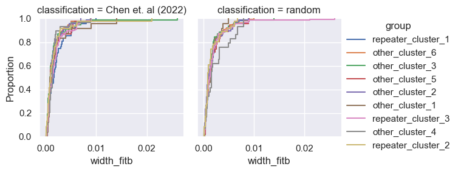
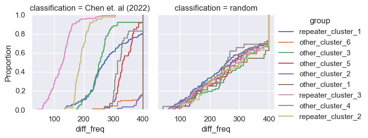
Footnotes
width_fitbis the intrinsic width of the pulse(The CHIME/FRB Collaboration 2021 doi:10.3847/1538-4365/ac33ab)↩︎